건축기사 (2004-09-05 기출문제)
1과목: 건축계획
1. 사무소건축의 코어에 대한 설명으로 옳지 않은 것은?
- 주내력벽 구조체로 내진벽 역할을 한다.
- 중심코어형은 바닥면적이 작은 경우에 적합하며 저층건물에 주로 사용된다.
- 설비시설을 집중할 수 있다.
- 공용부분을 한 곳에 집약시킴으로서 사무소의 유효면적을 증대시키는 역할을 한다.
(정답률: 77%)

2. 호텔의 세부계획에 대한 설명 중 틀린 것은?
- 보이실과 서비스실은 숙박시설이 있는 각층의 코어에 인접하여 둔다.
- 일반적으로 호텔의 부분별 면적 중 관리부분이 차지하는 비율은 30 ~ 40% 정도이다.
- 퍼블릭 스페이스층에는 60m 이내 마다 공동화장실을 설치한다.
- 지배인실은 자유롭게 출입할 수 있고 대화할 수 있는위치에 두도록 한다.
(정답률: 46%)
3. 쇼핑센타에서 전체면적에 대한 일반적인 핵점포의 면적비로 가장 적당한 것은?
- 약 50%
- 약 30%
- 약 20%
- 약 10%
(정답률: 52%)
4. 쇼윈도 유리면의 반사방지법으로 가장 부적당한 것은?
- 외부보다 쇼윈도 내부를 어둡게 한다.
- 곡면 유리를 사용한다.
- 유리를 사면으로 설치한다.
- 차양을 달아 외부에 그늘을 준다.
(정답률: 62%)
5. 아파트 각 형식에 관한 설명 중 옳지 않은 것은?
- 홀형은 승강기를 설치할 경우 1대당 이용률이 복도형에 비해 적다.
- 편복도형은 단위면적당 가장 많은 주호를 집결시킬수 있는 형식이다.
- 집중형은 기후조건에 따라 기계적 환경조절이 필요하다.
- 편복도형은 공용복도에 있어서 프라이버시가 침해되기 쉽다.
(정답률: 73%)
6. 학교 건물에서 단층 교사의 장점이 아닌 것은?
- 계단이 필요없으므로 재해시 피난상 유리하다.
- 학습 활동을 실외에 연장할 수 있다.
- 채광, 환기에 유리하고 내진ㆍ내풍구조가 용이하다.
- 설비 등을 집약할 수 있어서 치밀한 평면계획이 가능하다.
(정답률: 76%)
7. 학교운영 방식 중 전학급을 2분단으로 하고, 한 분단이 일반 교실을 사용할 때 다른 분단은 특별교실을 사용하는 방식은?
- 종합교실형(U형)
- 일반교실· 특별교실형(U· V형)
- 플라툰형(P형)
- 달톤형(D형)
(정답률: 65%)
8. 전시실 순회 방식에 관한 설명 중 옳지 않은 것은?
- 실연속 순회형은 비교적 소규모 전시실에 적합하다.
- 갤러리 및 코리더형은 중앙에 중정을 두는 경우도 많다.
- 갤러리 및 코리더형은 각실에 직접 들어갈 수 있는 점이 유리하다.
- 중앙홀형은 홀의 크기가 크면 중앙부 동선의 혼란이 있다.
(정답률: 61%)
9. 전시실의 채광방식 중 천장에 가까운 측면에서 채광하는 방법으로 다음 그림과 같은 모습을 보이기도 하는 것은?
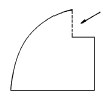
- 고측광창 형식(Clerestory)
- 정광창 형식(Top light)
- 측광창 형식(Side light)
- 정측광창 형식(Top side light)
(정답률: 48%)
10. 공동주택의 단위주거 단면구성 형태에 대한 설명 중 틀린 것은?
- 복층형(메조네트형)은 엘리베이트의 정지 층수를 적게 할 수 있다
- 스킵 플로어형은 주거단위의 단면을 단층형과 복층형에서 동일층으로 하지 않고 반층씩 엇나게 하는 형식을 말한다.
- 트리플렉스형은 듀플렉스형보다 프라이버시의 확보율은 낮고 통로면적도 불리하다.
- 플랫형은 주거단위가 동일층에 한하여 구성되는 형식이다.
(정답률: 79%)
11. 다음 설명 중 옳은 것은?
- 이집트 건축에서는 볼트와 아치가 적극적으로 이용 되었다.
- 비잔틴 건축에서는 모자이크가 많이 사용되었다.
- 그리이스 건축에서의 기둥은 분리되지 않은 단일한 석재로 되어 있었다.
- 로마건축에서는 첨두 아치(pointed arch)가 주로 사용되었다.
(정답률: 44%)
12. 근린분구에 대한 설명으로 옳은 것은?
- 100ha, 2000호를 생활권으로 한다.
- 일상 소비생활에 필요한 공동시설이 운영 가능한 단위이다.
- 아파트의 경우는 3~4층 건물로서 1~2동이 해당된다.
- 중심시설로는 초등학교, 도서관, 우체국 등이 있다.
(정답률: 44%)
13. 도서관에 관한 다음 기술 중 부적당한 것은?
- 열람실은 다른 방으로의 통로가 되지 않도록 한다.
- 폐가식 출납시스템은 대출절차가 필요없어 이용에 편리하다.
- 아동열람실은 개가식이 좋다.
- 서고내에 설치하는 소규모의 개인연구실을 캐럴이라고 한다.
(정답률: 81%)
14. 다음중 조선후기의 대표적 건축물이 아닌 것은?
- 수원 팔달문
- 경복궁 근정전
- 서울 동대문
- 봉정사 대웅전
(정답률: 56%)
15. 일반단독주택의 계획에 대한 설명으로 옳지 않은 것은?
- 현관의 위치는 대지의 형태, 방위, 도로와의 관계 등에 의하여 결정된다.
- 노인의 침실은 일조, 전망이 양호하며 식당, 욕실 및 화장실에 근접된 곳에 위치시킨다.
- 거실은 홀(hall)과 겸하여 사용되는 평면 배치를 하는 것이 좋다.
- 식당의 면적은 가족의 수와 식탁의 크기 등에 의해서 정해진다.
(정답률: 60%)
16. 극장의 각 평면형식에 대한 설명 중 잘못된 것은?
- 프로시니엄 형은 객석 수용 능력에 있어서 제한을 받는다.
- 오픈스테이지 형은 무대장치를 꾸미는데 어려움이 있다.
- 애리나 형은 최소한의 비용으로 극장표현에 대한 최대한의 선택 가능성을 부여한다.
- 가변형 무대는 필요에 따라서 무대와 객석를 변화시킬 수 있다.
(정답률: 44%)
17. 병원계획에 관한 설명 중 옳지 않은 것은?
- 수술부의 위치는 타 부분의 통과교통이 없는 장소이어야 한다.
- 건축형식 중 분관식은 일조, 통풍조건이 좋지 않으며 각 병실의 환경이 균일하지 못한 단점이 있다.
- 병실의 창문 높이는 90cm 이하로 하여 환자가 병상에 서 외부를 전망할 수 있게 하는 것이 좋다.
- 병원의 규모는 병상수를 통해 산정한다.
(정답률: 70%)
18. 은행건축에 관한 기술 중 부적당한 것은?
- 일반적으로 출입문은 안여닫이로 함이 타당하다.
- 은행실은 고객대기실과 영업실로 나누어지며 은행의 주체를 이루는 곳이다.
- 영업실의 면적은 은행원 1인당 적어도 20m2 이상되어야 한다.
- 금고실은 고객대기실에서 떨어진 위치에 둔다.
(정답률: 76%)
19. 한국은행 본점 구관(舊館)은 어느 양식의 건물인가?
- 비잔틴 양식
- 르네상스 양식
- 로마네스크 양식
- 고딕 양식
(정답률: 71%)
20. 공장건축의 레이아웃(layout)에 대한 설명 중 옳지 않은 것은?
- 고정식 레이아웃은 기능이 동일하거나 유사한 공정, 기계를 접합하여 고정 배치하는 방식이다.
- 레이아웃은 장래 공장규모의 변화에 대응한 융통성이 있어야 한다.
- 제품중심의 레이아웃은 대량생산에 유리하며 생산성이 높다.
- 표준화가 어려운 경우에 적합한 형식은 공정중심의 레이아웃이다.
(정답률: 54%)
2과목: 건축시공
21. 다음 중 열가소성 수지인 것은?
- 폴리에스테르수지
- 폴리프로필렌수지
- 에폭시수지
- 멜라민수지
(정답률: 39%)
22. 폭 6m, 두께 15cm로 630m의 도로를 7m3레미콘을 이용하여 시공하고자 한다. 주문해야 할 레미콘 트럭 대수는?
- 40대
- 59대
- 74대
- 81대
(정답률: 42%)
23. 경량콘크리트공사에서 경량골재의 취급 및 저장에 관한 내용 중 옳지 않은 것은?
- 골재의 짐부리기, 쌓아 올리기 및 물뿌리기를 할 때 입자가 분리되도록 한다.
- 골재를 쌓아둘 곳은 될 수 있는 대로 물빠짐이 좋게한다.
- 골재를 쌓아둘 곳은 햇볕을 덜 받는 장소를 택한다.
- 골재에 때때로 물을 뿌리고 표면에 포장 등을 하여 항상 같은 습윤상태를 유지한다.
(정답률: 57%)
24. 다음 중 수량 산출시 할증율이 가장 큰 것은?
- 원형철근
- 대형형강
- 고장력볼트
- 이형철근
(정답률: 71%)
25. 유동화콘크리트의 용어 중에서 베이스 콘크리트에 대한 설명으로 옳은 것은?
- 유동화 콘크리트 제조시 유동화제를 첨가하기 전의 기본 배합의 콘크리트
- 유동화 콘크리트를 제조하기 위하여 혼합된 유동화제를 첨가한 후의 콘크리트
- 기초 콘크리트에 타설하기 위해 현장에 반입된 레디믹스트 콘크리트
- 지하층에 콘크리트를 타설하기 위하여 현장에 반입된 레디믹스트 콘크리트
(정답률: 60%)
26. MCX(Minimum cost Expending)기법에 의한 공사기간 단축방법에서 아무리 비용을 투자해도 그 이상 공기를 단축할수 없는 한계점은?
- 특급점(crash point)
- 표준점(normal point)
- 포화점
- 경제 속도점
(정답률: 77%)
27. 녹막이 도료 중 알루미늄 녹막이 초벌칠에 가장 적합한 도료는?
- 광명단
- 징크로메이트 도료
- 아연분말 도료
- 역청질 도료
(정답률: 70%)
28. 면이 네모진 돌을 수평줄눈이 부분적으로 연속되고, 세로 줄눈이 일부 통하도록 쌓는 돌쌓기 방식은?
- 바른층 쌓기
- 허튼층 쌓기
- 오늬무니 쌓기
- 허튼 쌓기
(정답률: 39%)
29. 다음중 유리의 주성분으로 옳은 것은?
- Na2O
- CaO
- SiO2
- K2O
(정답률: 69%)
30. 철골공사의 공장작업순서를 바르게 나열한 것은?
- 원척도→ 본뜨기→ 금매김→ 절단 및 가공→ 구멍뚫기→ 가조립→ 본조립→ 검사
- 본뜨기→ 원척도→ 금매김→ 절단 및 가공→ 구멍뚫기→ 가조립→ 본조립→ 검사
- 원척도→ 금매김→ 본뜨기→ 절단 및 가공→ 구멍뚫기→ 가조립→ 본조립→ 검사
- 원척도→ 본뜨기→ 금매김→ 구멍뚫기→ 절단 및 가공→ 가조립→ 본조립→ 검사
(정답률: 53%)
31. 제치장 콘크리트에 관한 사항 중 가장 옳지 않은 것은?
- 제치장 콘크리트는 외장하지 않고 노출되는 콘크리트면 자체가 치장이 되게 마무리하는 콘크리트이다.
- 콘크리트 부어넣기는 벽· 기둥에서는 한번에 꼭대기까지 부어넣어야 한다.
- 철근의 피복은 외장을 하지 않기 때문에 보통때보다 1㎝정도 두껍게 하는 것이 좋다.
- 슬럼프는 기초에서 12∼16㎝, 기타는 18㎝ 정도로 한다.
(정답률: 27%)
32. 다음 중 지하연속벽 공법의 특징으로 맞는 것은?
- 인접건물의 경계선까지 시공이 불가능하다.
- 흙막이벽은 벽의 길이에 제한이 있다.
- 시공시의 소음· 진동이 크다.
- 흙막이벽은 깊은 지층까지 조성할 수 있다.
(정답률: 50%)
33. 파이프 회전용의 선단에 커터(cutter)를 장치하여 흙을 뒤섞으며 지중으로 파들어간 다음 파이프 선단에서 모르타르를 분출시켜 흙과 모르타르를 혼합하면서 파이프를 빼내는 말뚝이름은 다음중 어느 것인가?
- 페데스탈 말뚝
- 레이몬드 말뚝
- C.I.P 말뚝(cast in place)
- M.I.P 말뚝(mixed in place)
(정답률: 53%)
34. 철골철근 콘크리트의 사무소 건축에 있어서 철골 1t당 통상 사용되는 현장치기 리벳의 수로 적당한 것은?
- 100 - 150
- 200 - 250
- 300 - 400
- 500 - 600
(정답률: 20%)
35. 보의 거푸집은 중앙에서 간사이(span)의 얼마 정도로 치켜 올리는 것이 옳은가?
- 1/300∼1/500
- 1/150∼1/200
- 1/100∼1/150
- 1/50∼1/100
(정답률: 32%)
36. 다음은 공법에 관한 내용이다. 맞는 내용은?
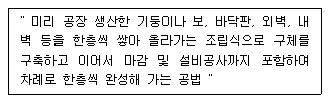
- 하프 PC합성바닥판공법
- 역타공법
- 적층공법
- 지하연속벽공법
(정답률: 68%)
37. 베노토(Benoto) 공법의 특징이 아닌것은?
- All casing공법이므로 주위지반에 영향을 주지 않고 안전하게 시공이 됨
- 긴말뚝(50∼60m)의 시공에는 적합하지 않음
- 굴삭 후 배출되는 토사로서 토질을 알 수 있어 지지층에 도달됨을 판명
- 기계는 대형 중량이고 케이싱튜브를 뽑아내는 반력도 커서 심히 연약한 지반 또는 수상시공에는 적절치 않음
(정답률: 39%)
38. 최근에는 바닥 마감재의 시공성 확보 및 일체성을 위해 플라스틱 바름 바닥재의 사용이 많아지고 있다. 다음의 플라스틱 바름 바닥재에 대한 설명으로 옳지 않은 것은?
- 폴리우레탄 바름 바닥재 - 공기중의 수분과 화학반응하는 경우 저온과 저습에서 경화가 늦으므로 5℃이하 에서는 촉진제를 사용한다.
- 에폭시수지 바름 바닥재 - 수지 페이스트와 수지모르타르용 결합재에 경화제를 혼합하면 생기는 기포의 혼입을 막도록 소포제를 첨가한다.
- 불포화폴리에스테르 바름 바닥재 - 표면경도(탄력성) , 신축성 등이 폴리우레탄에 가까운 연질이고 페이스트, 모르타르, 골재 등을 섞어서 사용한다.
- 프란수지 바름 바닥재 - 탄력성과 미끄럼 방지에 유리하여 체육관에 많이 사용한다.
(정답률: 55%)
39. 공정관리 용어로서 전체 공사과정중 관리상 특히 중요한 몇몇 작업의 시작과 종료를 의미하는 특정시점을 무엇이라 하는가?
- 중간관리일(Milestone)
- 절점(Node)
- 표준점(Normal Point)
- 비작업일
(정답률: 59%)
40. 다음 철골공사에 관한 설명 중 틀린 것은 어느 것인가?
- 리벳치기에서 리벳은 900-1,000℃로 가열한 것을 사용하고, 600℃이하로 냉각된 것은 사용할 수 없다.
- 녹막이도장은 작업장소의 온도가 5℃ 이하, 또는 상대습도가 80% 이상일 때는 작업을 중지한다.
- 철골이 콘크리트에 묻히는 부분은 특히 녹막이 칠을 잘해야 한다.
- 볼트 접합은 일반적으로 처마높이 9m 이하이고 스팬이 13m 이하의 건축물에서 사용한다.
(정답률: 65%)
3과목: 건축구조
41. 강도설계법에 의한 철근콘크리트 보의 전단설계에서 그림과 같은 보가 지지할 수 있는 최대전단강도는 얼마인가? (단, 사용재료는 fck=24MPa , fy=400MPa이다.) (1MPa=10kgf/cm2)
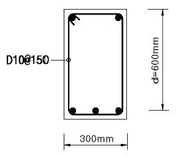
- 28.9 t
- 31.9 t
- 35.9 t
- 40.9 t
(정답률: 21%)
42. 철근콘크리트 구조설계 중 강도설계법의 강도감소계수에 관한 기술 중 가장 적절한 것은?
- 휨모멘트와 축인장력이 동시에 작용하는 보통 철근콘크리트 부재 : 0.75
- 전단 및 비틀림모멘트 : 0.70
- 콘크리트의 지압력 : 0.70
- 무근콘크리트의 휨모멘트 : 0.80
(정답률: 20%)
43. 그림과 같은 단순보에서 A점에 휨모멘트 18tf· m가 작용하는 경우 C점의 휨모멘트 MC의 값으로 옳은 것은?
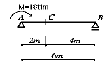
- 12 tf· m
- 14 tf· m
- 16 tf· m
- 18 tf· m
(정답률: 31%)
44. 강도설계법에서 철근콘크리트 직사각형 기둥의 구조제한에 관한 사항 중에 옳지 않은 것은?
- 단면의 최소 치수는 200㎜
- 단면의 최소 단면적은 60,000mm2
- 주근의 순간격은 25㎜ 이상.
- 주근의 최소 개수는 4개
(정답률: 18%)
45. 그림과 같은 캔틸레버 보의 휨모멘트도로 옳은 것은?
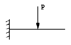
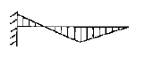
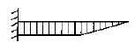
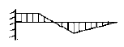
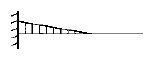
(정답률: 23%)
46. 다음의 철골조 주각 부분의 그림에서 A의 명칭은?
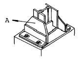
- base plate
- side angle
- anchor plate
- wing plate
(정답률: 63%)
47. 그림과 같은 좌우대칭의 T형 단면의 도심(G)이 플랜지 하단과 일치하게 하려면 플랜지 폭 B의 크기는? (단위: cm )
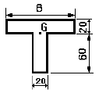
- 360 cm
- 180 cm
- 120 cm
- 60 cm
(정답률: 44%)
48. 다음 중 철근콘크리트구조에서 원형철근을 대신하여 이형 철근을 사용하는 가장 주된 목적은?
- 압축응력을 크게 하기 위하여
- 전단응력을 크게 하기 위하여
- 인장응력을 크게 하기 위하여
- 부착응력을 크게 하기 위하여
(정답률: 44%)
49. 원형 단면의 지름을 D라고 하면 단면계수 Z는?
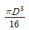
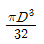
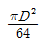
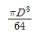
(정답률: 36%)
50. 용접치수 8mm, 용접길이 400mm인 양면 모살용접의 유효 단면적은 다음 중 어느 것과 가까운가?
- 21cm2
- 32cm2
- 38cm2
- 43cm2
(정답률: 40%)
51. 왕대공 지붕틀의 평보에 관한 설명 중 옳지 않은 것은?
- ㅅ자보와 평보는 볼트로 죈다.
- 평보는 천장이 없을 때에는 단순한 인장재이지만, 이 것이 있을 때에는 휨을 받는 인장재가 된다.
- 이어쓰는 것을 원칙으로 하며 스팬의 1/4되는 지점에서 잇는다.
- ㅅ자보와 평보의 맞춤은 빗턱통넣고 장부맞춤 또는 안장맞춤으로 한다.
(정답률: 29%)
52. 철골 플레이트 보에서 중간 스티프너(stiffner)를 사용하는 주된 목적은?
- 웨브 플레이트(web plate)에 생기는 휨모멘트에 저항하기 위해
- 플렌지 앵글(flange angle)의 단면을 작게 하기 위해
- 플랜지 앵글의 리벳간격을 넓게 하기 위해
- 웨브 플레이트의 좌굴을 방지하기 위해
(정답률: 48%)
53. 강도설계법에서 하중조합이 옳게 표현되지 않은 것은? (D:고정하중, L:활하중, W:풍하중, E:지진하중)
- 1.4D + 1.7L
- 0.75(1.4D + 1.7L + 1.9W )
- 0.75(1.4D + 1.7L + 1.8E )
- 0.9D + 1.3W
(정답률: 18%)
54. 조적구조에 대한 설명 중 옳지 못한 것은?
- 벽돌벽의 공간쌓기의 목적은 방습이나 열의 차단효과를 얻는 데 있다.
- 조적조에 있어서 통줄눈을 피하는 이유는 응력을 분산시키기 위해서이다.
- 영식쌓기는 한 켜는 길이쌓기, 다음 켜는 마구리쌓기를 번갈아 쌓고 끝부분에 한 켜 걸러 칠오토막을 넣는다.
- 보강콘크리트 블록조 벽은 테두리보를 설치하여 내력벽과 일체시킴으로써 건축물의 강도를 높인다.
(정답률: 33%)
55. 그림과 같은 단면에서 x-x축에 대한 단면2차반경 값으로 맞는 것은?
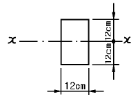
- 5.5cm
- 6.9cm
- 7.7cm
- 8.1cm
(정답률: 46%)
56. 철근콘크리트구조의 지중보의 역할에 대한 설명 중 옳은 것은?
- 기초를 서로 연결시켜 기초의 부동침하 및 이동을 방지한다.
- 콘크리트의 압축응력도를 증가시킨다.
- 압축력과 국부좌굴에 저항한다.
- 철근콘크리트보의 전단내력을 증가시킨다.
(정답률: 50%)
57. 벽체에 관한 기술 중 옳지 못한 것은?
- 목조 벽체를 수평력에 견디게 하고 안정한 구조로 하기 위해 가새를 설치한다.
- 벽돌구조에서 각 층의 대린벽으로 구획된 벽에서는 문꼴의 나비의 합계는 그 벽길이의 1/2이하로 한다.
- 목조 벽체에서 샛기둥은 본기둥 사이에 벽체를 이루는 것으로서 가새의 옆휨을 막는데 유효하다.
- 창문의 나비가 1.2m 이상인 벽돌조 문꼴의 상부에는 철근 콘크리트 인방보를 설치한다.
(정답률: 28%)
58. 보의 주근(인장철근)의 양을 줄이기 위한 방법으로 합당 하지 않은 것은?
- 보의 춤을 크게 한다.
- 고강도의 철근을 사용한다.
- 부착이 문제가 되는 경우 고강도 콘크리트를 사용한다.
- 늑근의 양을 증가시킨다.
(정답률: 30%)
59. 그림과 같은 단근 직사각형보의 등가응력블록춤(a)은? (단,fck=24MPa, fy=400MPa, 1MPa = 10kgf/cm2 )
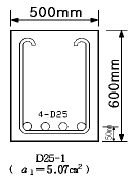
- 5.95 ㎝
- 6.95 ㎝
- 7.95 ㎝
- 8.95 ㎝
(정답률: 30%)
60. 그림과 같은 단순보에서 최대 처짐값은 어느 것인가? (여기서, 보의 단면(b×h)은 20cm×30cm이고, 탄성계수 E= 2.1×106kgf/cm2이다)
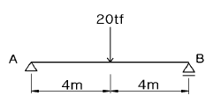
- 1.36cm
- 1.81cm
- 2.26cm
- 2.71cm
(정답률: 39%)
4과목: 건축설비
61. 다음의 전기설비 중 약전설비에 속하는 설비는?
- 변전설비
- 간선설비
- 피뢰침설비
- 전화설비
(정답률: 63%)
62. 대변기 세정수의 급수방식 중 급수관에 직접 연결하여 핸들을 누르면 급수관으로부터 일정량의 물이 방출되어 변기를 세정하는 방식은?
- 하이탱크식
- 플러시밸브식
- 블로우아웃식
- 사이폰식
(정답률: 57%)
63. 가변풍량(VAV) 방식에 대한 설명으로 옳은 것은?
- 정풍량 방식에 비해 에너지 절감효과가 크다.
- 각실 또는 스페이스별 개별 제어가 불가능하다.
- 실내공기의 청정화를 요할 때 적당하다.
- 실내의 열부하 변동에 따라 송풍온도를 변화시키는 방식이다.
(정답률: 30%)
64. 수전설비에 대한 다음 설명 중 틀린 것은?
- 특별고압수전설비는 7,000V를 넘는 전압으로 수전하는 방식이다.
- 수전용량산출에 사용하는 부하율이란 평균수용전력을 부하밀도로 나눈 것이다.
- 수전용량산출에 사용하는 수용율은 최대수용전력을 부하설비용량으로 나눈 것이다.
- 부등율이란 수용 설비 각각의 최대수용전력의 합을 합성 최대수용전력으로 나눈 것이다.
(정답률: 19%)
65. 에스컬레이터에 대한 설명 중 옳지 않은 것은?
- 수송 능력이 엘리베이터의 약 10배 정도이며 짧은 거리의 대량 수송에 적합하다.
- 정격속도는 30 ~ 60[m/min]로 하는 것이 좋다.
- 점유 면적이 적고 기계실이 필요하지 않다.
- 엘리베이터에 비해 소비되는 전력량과 전동기의 기동 횟수가 적다.
(정답률: 37%)
66. 방열기를 설치하지 않아 실내 바닥면의 이용도가 높으며 실내의 온도분포가 균등하고 쾌감도가 높은 난방방식은?
- 온풍난방
- 증기난방
- 고온수난방
- 복사난방
(정답률: 58%)
67. 옥내 조명의 설계순서로 옳은 것은?
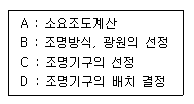
- A - B - C - D
- A - D - C - B
- B - C - A - D
- A - C - D - B
(정답률: 54%)
68. 고가수조방식을 채택한 건물에서 최상층에 세정밸브식 대변기가 설치되어 있을 때, 세정밸브로부터 고가수조 저수위면까지의 필요최저높이는? (단, 고가수조와 세정밸브까지의 총마찰손실은 5mAq이며 세정밸브의 최저필요압력은 0.7kg/cm2 이다.)
- 5m
- 5.7m
- 12m
- 15m
(정답률: 35%)
69. 수송설비에 관한 설명 중 틀린 것은?
- 리미트 스위치는 엘리베이터 작동시에 전동기 등에 과전류가 흐르게 될 때 각종 기기를 보호하기 위해 설치하는 기기이다.
- 전동 덤웨이터는 사람은 타지 않고 물품만을 승강시키는 장치이다.
- 승용 엘리베이터는 1인당의 하중을 65kg으로 하여 최대 정원을 구한다.
- 기송관 장치란 통에 수용한 피반송물을 공기의 압력차를 이용하여 수송하는 것이다.
(정답률: 56%)
70. 팬 코일 유닛 방식에 대한 설명 중 옳지 않은 것은?
- 덕트 스페이스가 필요 없다.
- 각 유닛마다 개별 제어가 가능하다.
- 기존 건물에도 설치가 간단하고 부하 증가에 대하여 유닛의 증설이 용이하다.
- 전공기식에 비해 다량의 외기송풍량을 공급하기가 용이하므로 겨울의 외기냉방에 유리하다.
(정답률: 49%)
71. 자동화재탐지설비에 관한 기술 중 옳지 않은 것은?
- 차동식 감지기는 주위온도가 일정한 온도 상승률 이상이 되었을 때 작동하는 감지기이다.
- 정온식 감지기는 주위온도가 일정한 온도 이상이 되었을 때 동작하는 것으로 보일러실 등에 설치한다.
- 이온화식 감지기는 감지기 주위의 공기가 일정한 농도의 연기를 포함하게 되면 작동하는 감지기이다.
- 광전식 감지기는 차동식 감지기와 정온식 감지기의 기능을 합친 것이다.
(정답률: 43%)
72. 유로의 패쇄나 유량의 계속적인 변화에 의한 유량조절에 적합한 밸브로 스톱밸브라고도 불리우는 것은?
- 글로브 밸브
- 체크 밸브
- 슬루스 밸브
- 볼 밸브
(정답률: 32%)
73. 20℃의 물을 80℃로 가열할 때 물의 팽창비율은? (단, 20℃ 물의 비중량은 998kg/m3, 80℃ 물의 비중량은 972kg/m3이다.)
- 2.0%
- 2.3%
- 2.7%
- 3.0%
(정답률: 22%)
74. 난방부하 = qh, 급탕부하 = qw, 배관손실 = qp, 예열부하 =qa 이고 보일러의 상용 출력 = H 이라면 보일러의 정격 출력은?
- H + qp
- qh + qw + qp
- H + qa
- qh + qp + qa
(정답률: 27%)
75. 터보 냉동기의 특징에 대한 설명 중 옳지 않은 것은?
- 압축기의 임펠러 회전에 의한 원심력으로 냉매가스를 압축한다.
- 일반적으로 대용량에는 부적합하며, 100 냉동톤 이하의 소용량의 것에 적용한다.
- 용량 조절에는 압축기의 흡입베인 제어 또는 회전수 제어가 이용된다.
- 왕복동식에 비하여 진동이 적다.
(정답률: 36%)
76. 배수관에 있어서 청소구(clean out)를 원칙적으로 설치해야 하는 곳이 아닌 것은?
- 배수 수평지관의 최하단부
- 배관이 45° 이상의 각도로 방향을 바꾸는 곳.
- 배수 수평주관과 옥외배수관의 접속장소와 가까운 곳
- 배수 수직관의 최하부
(정답률: 35%)
77. 습기가 많은 은폐 장소에는 적당치 않으며 주로 철근 콘크리트 건물에서 기설의 금속관 배선으로부터 증설 배선하는 경우에 이용되는 전기공사법은?
- 금속 몰드 공사
- 애자 사용 공사
- 경질 비닐관 공사
- 케이블 공사
(정답률: 43%)
78. 흡수식 냉동기의 주요 구성부분이 아닌 것은?
- 응축기
- 압축기
- 증발기
- 재생기
(정답률: 30%)
79. 흡음재에 관한 설명 중 옳은 것은?
- 판진동 흡음재의 흡음판은 못 등으로 고정하는 것보다는 기밀하게 접착하는 것이 판진동하기 쉬우므로 흡음률이 커진다.
- 다공질 흡음재는 중ㆍ고주파수보다는 저주파수에서의 흡음율이 크다.
- 유공판 흠음구조의 흡음특성은 중음역 근처에서 최소치를 갖는 특성이 있다.
- 다공질 흡음구조의 다공질 재료의 표면이 다른 재료에 의해 피복되어 통기성이 저해되면 중,고주파수에 서의 흡음률이 저하된다.
(정답률: 23%)
80. 조명기구 중 천장과 윗벽 부분이 광원의 역할을 하며 조도가 균일하고 음영이 유연하나 조명율이 낮은 특성을 갖는 것은?
- 직접조명기구
- 반직접조명기구
- 간접조명기구
- 전확산조명기구
(정답률: 52%)
5과목: 건축법규
81. 대지면적이 1,500m2이고 조경면적을 대지면적의 10%로 정해진 지역에 건축물을 신축할 때 옥상에 조경을 150m2시공했다. 이런 경우 지표면의 조경면적은 최소 얼마만큼 해야 하는가?
- 안해도 됨
- 50m2
- 75m2
- 100m2
(정답률: 44%)
82. 방화벽의 구조 기준에 대한 기술 중 옳지 않은 것은?
- 내화구조로서 홀로 설 수 있는 구조일 것
- 방화벽에 설치하는 출입문의 너비 및 높이는 각각 2.3m이하로 할 것
- 방화벽의 양쪽 끝과 윗쪽 끝을 외벽면 및 지붕면으로 부터 0.5m 이상 튀어나오게 할 것
- 방화벽에 설치하는 출입문에는 갑종방화문을 설치할 것
(정답률: 27%)
83. 다음은 용도별 건축물의 종류를 나타낸 것이다. 부적합한 것은?
- 철도역사, 공항시설은 판매 및 영업시설에 속한다.
- 장례식장은 의료시설에 해당한다.
- 단란주점으로서 동일한 건축물안에서 당해 용도에 쓰이는 바닥면적의 합계가 100인인 것은 위락시설이다.
- 어린이회관은 관광휴게시설이다.
(정답률: 5%)
84. 다음 중 건축법의 설명이 잘못된 것은?
- 지하층은 어떠한 경우라도 층수에 산입하지 아니한다.
- 용적률의 산정을 위한 연면적에는 지하층과 지상층의 주차용으로 사용되는 면적은 어떠한 조건이라도 제외한다.
- 건축물의 높이산정에서 준주거지역에 있는 백화점의 옥상에 공동주택을 증축한다면 공동주택의 지표면은 백화점의 옥상바닥으로 본다.
- 태양열을 주된 에너지원으로 이용하는 주택의 건축면적은 건축물의 외벽중 내측 내력벽의 중심선을 기준으로 한다.
(정답률: 29%)
85. 다음 중 광역도시계획 내용에 포함되지 않는 것은?
- 광역계획권의 공간구조와 기능분담에 관한 사항
- 광역계획권의 녹지관리체계와 환경보전에 관한 사항
- 광역계획권의 경제, 사회, 문화적 특성과 복지시설등 제반환경에 관한 사항
- 경관계획에 관한 사항
(정답률: 16%)
86. 기계식주차장의 기준에 관한 기술이 잘못된 것은?
- 중형기계식주차장의 전면공지는 너비 8.1m 이상, 길이 9.5m 이상으로 하여야 한다.
- 자동차를 입출고하는 사람이 출입하는 통로는 너비 0.5m 이상, 높이는 1.8m 이상으로 하여야 한다.
- 주차대수가 20대를 초과하는 매 20대마다 1대분의 정류장을 확보하여야 한다.
- 대형기계식주차장은 직경 4m 이상의 방향전환장치와 그 방향전환장치에 접한 너비 1m이상의 여유공지가 있어야 한다.
(정답률: 24%)
87. 건축법상 다중이용건축물에 해당되는 것은?
- 15층인 판매 및 영업시설
- 바닥면적의 합계가 3,000m2이상인 종합병원
- 바닥면적의 합계가 3,000m2인 판매 및 영업시설
- 16층인 관광숙박시설
(정답률: 32%)
88. 자주식주차장으로서 건축물식에 의한 노외주차장의 경사로의 설명으로 옳지 않은 것은?
- 경사로의 종단구배는 직선부분에서는 17%를 초과하여서는 아니된다.
- 경사로의 차로너비는 직선형 1차선인 경우에는 3.3m 이상으로 하여야 한다.
- 높이는 주차바닥면으로부터 2.3m 이상으로 하여야한다.
- 경사로의 차로너비는 곡선형 2차선인 경우에는 6.0m이상으로 하여야 한다.
(정답률: 30%)
89. 다음중 건축물에 설치하는 피뢰설비의 구조기준에 관한 기술중 틀린 것은?
- 돌침은 지름 12mm 이상인 알루미늄· 철 또는 강봉을 사용해야 한다.
- 피뢰도선은 그 단면적이 알루미늄의 경우 50mm2 이상 이어야 한다.
- 피뢰도체의 보호각은 일반건축물인 경우 60° 로 해야한다.
- 각 인하도선당 1개 이상의 접지극을 3m 이상 또는 상수면위에 매설해야 한다.
(정답률: 20%)
90. 건축법상의 계단 및 복도의 설치기준에 관한 설명으로 옳지 않은 것은?
- 높이가 3m를 넘은 계단에는 높이 3m 이내마다 너비 1.2m 이상의 계단참을 설치할 것
- 거실의 바닥면적의 합계가 100m2이상인 지하층의 계단인 경우에는 계단 및 계단참의 너비는 120㎝ 이상으로 할 것
- 계단을 대체하여 설치하는 경사로의 경사도는 1:6을 넘지 아니할 것
- 공연장의 개별 관람석 바닥면적이 300m2이상인 경우 그 관람석의 바깥쪽에는 그 양쪽 및 뒷쪽에 각각 복도를 설치할 것
(정답률: 34%)
91. 면적이 1㎢ 이상인 토지의 형질변경은 어디서 심의를 거쳐야 하는가?
- 시· 군· 구도시계획위원회
- 시· 도도시계획위원회
- 중앙도시계획위원회
- 건설교통부장관
(정답률: 36%)
92. 6층 이상의 건축물의 연면적이 2000m2 이상일 때 다음 건축물 중 승용승강기를 가장 적게 설치할 수 있는 건축물의 용도는?
- 병원
- 위락시설
- 숙박시설
- 공동주택
(정답률: 58%)
93. 도시계획시설 또는 도시계획시설예정지에 건축을 허가할수 있는 가설건축물의 구조가 아닌 것은?
- 철골철근콘크리트구조
- 벽돌구조
- 철골구조
- 블록구조
(정답률: 52%)
94. 시설면적 30,000m2 이고 36홀 규모의 골프장에 부설주차장을 만들 경우 주차 대수는?
- 100대
- 200대
- 300대
- 360대
(정답률: 52%)
95. 공개공지 등의 확보에 대한 기술 중 옳지 않은 것은?
- 연면적의 합계가 5,000m2 이상인 업무시설은 공개공지를 확보해야 한다.
- 일반주거지역은 소규모 휴식시설등의 공개공지를 확보해야 한다.
- 연면적의 합계가 5,000m2 이상인 숙박시설은 공개공간을 확보해야 한다.
- 전용공업지역은 소규모휴식시설등의 공개공지 또는 공개공간을 설치해야 한다.
(정답률: 33%)
96. 노외주차장의 설치에 대한 계획기준으로 옳지 않은 것은?
- 토지이용현황을 참작한다.
- 전반적인 주차수요를 참작한다.
- 자연녹지지역이 아닌 지역이어야 한다.
- 입구와 출구를 따로 설치해야 하는 경우도 있다.
(정답률: 35%)
97. 노외주차장인 주차전용건축물에 대한 내용으로 옳지 않은 것은?
- 대지가 너비 12미터 미만의 도로에 접하는 경우 건축물의 각 부분의 높이는 그 부분으로부터 대지에 접한 도로의 반대쪽 경계선까지의 수평거리의 3배로 한다.
- 대지면적의 최소한도는 45제곱미터 이상으로 한다.
- 대지가 2 이상의 도로에 접하는 경우에는 이들 도로 중 가장 좁은 도로를 기준으로 하여 건축물의 높이를 제한한다.
- 건폐율은 100분의 90 이하로 한다.
(정답률: 33%)
98. 목조건축물에서 연면적이 얼마인 경우 건설교통부령이 정하는 바에 따라 그 구조를 방화구조로 하거나 불연재료로 하는가?
- 5백제곱미터 이상
- 1천제곱미터 이상
- 1천5백제곱미터 이상
- 3천제곱미터 이상
(정답률: 57%)
99. 국토의 계획 및 이용에 관한 법률에서 도시기본계획은 누구의 승인을 받아야 하는가?
- 시장· 군수
- 도지사
- 건설교통부장관
- 대통령
(정답률: 29%)
100. 지하층에 설치하는 비상탈출구에 대한 기술 중 틀린것은?
- 비상탈출구에서 피난층 또는 지상으로 통하는 복도나 직통계단까지 이르는 피난통로의 유효너비는 0.75m 이상으로 할 것
- 비상탈출구는 출입구로부터 2m 이상 떨어진 곳에 설치할 것
- 비상탈출구의 유효너비는 0.75m 이상으로 하고, 유효높이는 1.5m 이상으로 할 것
- 지하층의 바닥으로부터 비상탈출구의 아랫부분까지의 높이가 1.2m 이상이 되는 경우에는 벽체에 발판의 너비가 20cm 이상인 사다리를 설치할 것
(정답률: 20%)